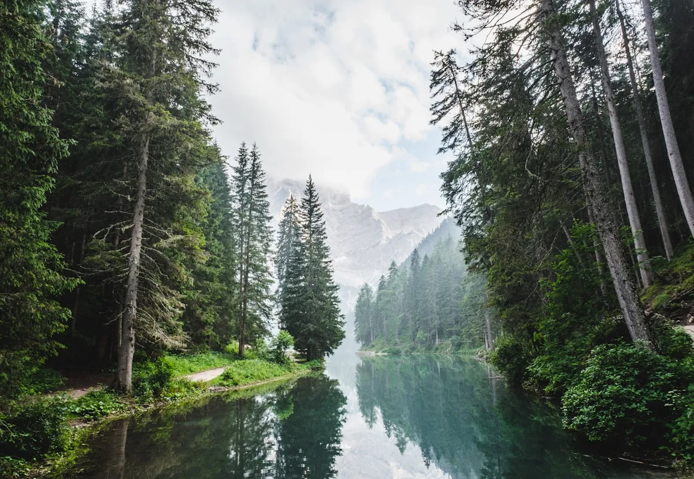

The Studio Collection
Current Weaves

Cirrus Wrap
Grade A Cashmere · Arctic White

Stratus Throw
Cashmere-Silk Blend · Slate

Cumulus Stole
Pure Silk · Mist Grey
Nimbostratus Blanket
Double-Weave Cashmere · Storm